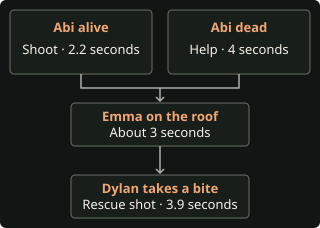

Choose an outcome
Start with Rough Night through Chapter 3, or replay from the earliest step your save needs. Start in Chapter 1 to change whether Jacob picks up Emma’s bracelet by the van. Start in Chapter 2 to change whether Dylan chooses Shut Trapdoor in Chris’s office. Start in Chapter 4 to change Emma’s island bite, or Chapter 6 if she already left the island the way you need.
A bite from Max in Chapter 4 makes Emma turn at the van. A bite from Caleb in Chapter 6 sends her to the storm shelter before she turns, even if Max already bit her. Set Aim Assist to Off and use manual prompts. Pass inputs unless a step calls for a miss or timeout. Input settings · Replay rules
- Stay human and reach the office · avoid both bites.
- Die on the island · choose the treehouse or zipline death.
- Die at the van · take Max’s bite, then use silver as Kaitlyn.
- Survive infected after the van · take Max’s bite, repel Emma and spare Chris.
- Recover in the woods · take Max’s bite, repel Emma and shoot Chris. Jacob’s condition and the bracelet determine the next scene.
- Turn in the shelter · take Caleb’s bite. Abi’s escape and Silas’s fate determine the recap.
Find a pickup on this route
This list starts in Chapter 4. Earlier pickups are in Rough Night. Justice and the Memory Card need Jacob alive at the boardwalk. The Hierophant requires shelter exploration. The High Priestess and Trail Cam Footage require Kaitlyn to reach the lodge. Full collectible checklist
Chapter 4
Don’t Panic

Ryan · Keep Jacob alive for the woods
- Take Apply Pressure? and pass the mash. Choose Dismissive, then take Call Out? when the bushes move.
- Hold fire during the first window. During the second window, hold fire to save Jacob or hit him in the bushes to set up Emma’s woods scene without Jacob. If he walks out, choose Questioning and let Let Go? expire. If he died, choose Thoughtful to leave the note that Emma can read in Chapter 6.
Emma · Reach the cabinet in the treehouse
Optional tarot · The Magician
Go back to the tip of the island dock. Press Interact when the camera cuts to the card. Step away and approach again to retry. Pickup video
- Follow the trail to the stairs and open the treehouse door. Choose Search Bag → Use Taser. To get the two island clues first, use the Chapter 4 pickup route.
Optional evidence · Attack Photo
Take Take Photo immediately after the taser. The interrupt expires before the chase. Pickup video
- Press Down to dodge the first obstacle and pass the first zipline mash. Choose Spray and press Up twice on the walkway.
- Back inside, choose Use Trapdoor as soon as it appears. At the cabinet, press Down and pass the ladder mash to escape unbitten. Use the next step for the van or woods branch.
- To take Max’s bite, let Down expire at the cabinet. Press Right to fend Max off, then pass the ladder mash. For a leg bite, pass the cabinet dodge, let the ladder mash expire with the taser in hand, and press Up to escape. Either bite works. Both bites and recovery inputs
Dylan · Finish the lodge call
Optional tarot · Strength
Take it as the group carries Nick through the lodge doorway. The base prompt lasts 3.5 seconds and the scene gives one attempt. Pickup video
Choose Optimistic → Hopeful → Determined → Suspicious → Calm → Defensive → Give Gun. Back as Emma at the crank, choose Reel Slowly and let Speed Up? expire. This preserves the bite status from the treehouse.
Alternate outcomes · Emma dies on the island
- Max kills Emma. Choose Open Trapdoor as soon as Emma enters the treehouse. If you want Attack Photo first, use the taser and take the photo, then survive to the final crank. Choose Reel Quickly → Reel In and let Right expire. Treehouse death recap
- Emma falls onto the rocks. Survive the treehouse and pass the ladder mash. At the final crank choose Reel Quickly → Jump and let Up expire. Zipline fall recap
If Max is cured later, he can find Emma after the werewolf death. The fall onto the rocks skips that scene on the audited PC build. Max’s island scene
Choose Move On if Eliza offers a reading.
Chapter 5
White Noise
Follow Rough Night’s lodge and radio-hut steps. Keeping the cabin locked in Chapter 1 lets Dylan reach the van uninfected with both hands. If the cabin was broken into, use the radio-hut choices to decide what happens when Dylan gets bitten.
Optional tarot · The Devil
Walk between the central swing and the picnic tables. Press Interact when the camera shows the side of the table. Card and pickup video
Optional evidence · Claw Marks
At the hut, look at the wall by the fan left of the entrance. Pickup video
Optional tarot · The Hermit
Round the corner past the claw marks and approach the foot of the tower. Step away and return if the prompt expires. Card and pickup video
Chapter 6
Prayers by Night

Jacob · Decide his condition for the reunion
- If Jacob is alive, climb the walkway stairs. Take the right fork for the camera on the ground if you want the Memory Card. Go down the far stairs and take the right-hand trail when you’re ready to continue.
Optional evidence · Memory Card
Inspect the camera lying on the ground on the right branch of the wooden walkway. Pickup video
Optional tarot · Justice
Turn left after coming down from the boardwalk. Take the card at the camera change before heading right into the chase. Pickup video
- With Emma alive, choose Delighted → Apologetic and press Right to dodge. If Emma died, the opening dodge is Down.
- Choose Run. Pass the mash and choose Pry Open to reach the cages uninfected. To make Jacob turn during Emma’s reunion, fail the Run mash. Caleb bites him even if Bobby put blood on him, and the chase ends before the trap. Jacob’s bite variants
Abi · Choose who reaches the van or shelter
- As Kaitlyn choose Compassionate, take Intervene and choose Help Nick when he falls into the pool. Get any pickups before Abi checks him.
Optional tarot · The Moon
Walk into the third changing stall on the left and approach the back wall. If the prompt expires, leave the stall and re-enter. Pickup video
- As Abi, check Nick and choose Calm → Compassionate. Hit Nick within the 6.5-second base aiming window to save Abi. To send Emma into the shelter alone on the Chapter 6 bite route, let the timer expire so Nick kills Abi. Keep Abi alive for the silver shot at Emma or the later shelter chase.
Emma · Decide whether to take Caleb’s bite
- When Emma takes over at the firepit, get Kid’s Letter Home from the ground by the yellow tent. Leave any leftover firework and follow either uphill trail until you see the hunters.
- For the van or the uninfected route, let Run? expire. Jedediah grabs Emma and she escapes without a new bite.
- For the shelter transformation, take Run? without the firework. Caleb bites Emma’s leg. If you already picked up the firework, let the Up prompt expire to get the bite. This choice takes priority over a bite from Max. Forest map and firework branches
Ryan · Meet Laura
At the pool house choose Reassuring → Suspicious → Interested. Choose Move On at Eliza if offered.
Chapter 7
The Past Behind Us
Follow the station walkthrough. Take the syringe from the third upstairs office, hide it behind the loose brick, and press Left when Travis enters the cell on the escape. Keeping him unharmed lets you hunt Silas and cure a shelter-infected Emma.
Optional tarot · The World
Walk toward the bed, then back toward the bars. Take the card beneath the bed before using the spoon. If the camera prompt expires, repeat the walk. Card and pickup video
Optional tarot · The Chariot
Walk between the tables in the main room. Step away and return to the gap if the prompt expires. Card and pickup video
Optional evidence · Cease & Desist Letter
Go up the short steps at the lobby corner and inspect the paper across from the wooden door. Pickup video
Chapter 8
The Belly of the Beast

Follow Ryan and Laura’s pool-house conversation and flooded quarry route. Take these optional pickups before leaving the quarry.
Optional tarot · The Lovers
After the railing breaks, keep left on the next ledge. Take the card before approaching the stairs ahead. Card and pickup video
Optional evidence · Scarred Flesh
Inspect the patch on the ground before the next walkway. Both outcomes of the stair prompt leave it accessible. Pickup video
Optional tarot · Wheel of Fortune
Follow the tunnel and take the card when the camera swings around. If it expires, back out of the trigger and approach again before leaving through the basement door. Card and pickup video
Kaitlyn · Open the van
- Choose Honest when Abi is alive or Optimistic when Abi is dead. Emma emerges human if she has Caleb’s Chapter 6 bite or no bite. Let Comfort? expire if she mourns Abi. If Emma died on the island, the van is empty. On these branches choose Encouraging when Kaitlyn and Dylan discuss the van.
- If Emma has only Max’s bite, she attacks. With Abi alive, choose Shoot and hit Emma within 2.2 seconds as she crosses the reticle. With Abi dead, choose Help and hit Emma within four seconds to protect Dylan.
- Hit Emma again when she climbs onto the roof. The base window is about three seconds. If the shot fails and Dylan takes a bite, hit her within the 3.9-second rescue window to save him. All missed-shot outcomes
- For the silver-shot death, give Emma Max’s island bite, let Run? expire at the hunters and keep Abi alive at the pool. At the van, choose Shoot and hit Emma on the ground and on the roof. When Abi offers ammo, choose Silver Shot or let the choice expire to kill Emma. Choose Regular Shot to drive her off alive. If Abi died earlier, the successful shots drive Emma off without an ammo choice. Silver-shot death recap

Ryan · Free Jacob
Optional tarot · The Empress
Turn left from where you gain control and walk around the distillery room until the camera reveals the card. The Rum Still clue is in the same room. Card and pickup video
Optional tarot · The Emperor
Return to the starting corridor and walk straight. Take the card before entering the tunnel lit in red. Card and pickup video
Enter the red-lit passage and press Down at the slippery floor. Let Open Cage? expire and take Stop Laura? when she aims at Nick. If Jacob is in the cage, choose Help Jacob and use 1 + 2 → Continue → 2 + 3. This lets him reach Emma’s woods scene. Wrong-pair recovery
Chapter 9
The Matriarch

Use Rough Night’s house steps to spare Constance, Jedediah and Bobby. Choose Accept when Laura offers to bite Ryan and let Pull Away? expire. Give Kaitlyn the ankle bite at the crane if you plan to save her and Caleb without a silver shell.
Optional evidence · Kaylee’s Letter
Open the small jewelry box on the dresser to the right of the fireplace. Pickup video
Optional tarot · Death
Cross the bedroom toward the bed to trigger the camera change. Take the card before interacting with the left door or running out of time. Card and pickup video
Optional tarot · The Sun
Walk toward the windows in the room beyond the upstairs office. Take the card before you approach the door. Step away and approach again if the prompt expires. Card and pickup video
Optional tarot · Judgement
Walk across the container roofs after opening the gate. Take the card at the camera change. The green sign between the far staircases is the Discarded Signage clue. Card and pickup video
Abi or Emma · Explore the storm shelter
- If Emma is still human, she explores with Abi or alone if Abi died. If Emma already turned at the van, only Abi can explore. With both counselors absent, skip to the attic. In the earlier dance conversation, choose Curious → Friendly if offered.
Optional tarot · The Hierophant
Approach the stairs and take the card at the camera change. Step away and return if the prompt expires. Using the separate ladder ends exploration. Pickup video
- Inspect the lit fuse box for silver before using the ladder. If Abi spent her shell on Emma at the van, take this one if you want to shoot Caleb later. Shelter map and pickups
- Use the ladder. Emma climbs into Chris’s office if she was never bitten. Office recap
- If Emma took Caleb’s bite and Abi is dead, the ladder interaction starts Emma’s transformation alone.
- If Abi is present with a bitten Emma, choose Concerned as Emma starts turning. Choose Ladder and pass the mash if the rung breaks. This saves Abi and lets her bring silver to the office. If Dylan chose Shut Trapdoor in Chapter 2, the rung is intact and there’s no mash.
- To see Emma kill Abi here, choose Stairs instead. Abi dies and there is no silver handoff at the lodge. Abi’s shelter death recap
Ryan · Choose whether Chris survives
- As Laura, approach Chris. After they crash through the floor, hit Chris, the werewolf directly ahead, within the 4.1-second base window. This sets up Emma’s woods cure if she escaped the van. With Ryan bitten and Travis unharmed, choose Suspicious to set up the hunt for Silas.
- To keep Emma infected after the van, let the attic shot expire. Chris survives and Ryan, Laura and Travis die. The hunt is skipped. If uninfected Jacob gets chased, choose Run, pass the mash and press Up at the snare so he survives. Infected van recap · Other Chris survival routes
- If you took The Hierophant, press Left when the stake flies at Eliza during the flashback. Otherwise choose Move On if she offers a reading.
Chapter 10
Bricks & Mortar

Emma · Recover in the woods
Emma changes back before the lodge fight when she took only Max’s bite, survived the van, and Ryan shot Chris. As Max, choose Stay at the dock if the swim decision appears.
- Jacob alive, free and uninfected. As Jacob choose Honest → Remorseful → Apologetic. He tells Emma what he did to the van and earns Nobody’s Fool. Reunion recap
- Jacob alive, free and bitten. He transforms during the encounter. If you picked up Emma’s bracelet as Jacob by the van in Chapter 1, she uses it automatically to fend him off. If you left it in the grass, he kills her. Bracelet recap · Death recap
- Jacob dead. After the cure, Emma waits alone. Use the second bushes shot in Chapter 4 to set this up, or continue from a save where Jacob drowned. Alone in the woods recap
Kaitlyn and Laura · Finish the shelter routes
- At the lodge, go upstairs and inspect the chimney portrait once you finish exploring. Choose Prepare for Attack. Get the Trail Cam Footage first if you want evidence.
Optional tarot · The High Priestess
Take the stairs next to the bunk room and approach the top-floor windows. Take the card at the camera change before starting the attack. Pickup video
Optional evidence · Trail Cam Footage
Check the boxes near the couch on the upper floor before starting the attack. This is the last evidence pickup. Pickup video
- If Kaitlyn took the ankle bite, choose Run → Beam, let the balance mash expire, then let the Up recovery expire. Kaitlyn lives through the fall and Caleb leaves the lodge alive. If Kaitlyn reached the lodge unbitten and Abi brought silver, use the silver shot at Caleb.
- Cured after transforming. Take Caleb’s bite in Chapter 6. If Abi is present, choose Ladder and pass the mash if prompted. If Abi is already dead, use the ladder as Emma to start her transformation. Set up the hunt in the attic, complete the car attack, then take Raise Gun? at the nest and hit Silas. Cured shelter recap
- Cured after killing Abi. Shoot Nick at the pool house to keep Abi alive, then take Caleb’s bite in Chapter 6. Give Kaitlyn the crane bite if you want her to survive the beam fall without a silver handoff. Choose Stairs when Emma turns in the shelter. Set up the hunt in the attic and shoot Silas at the nest. Cure after Abi’s death
- Still infected. Take Caleb’s bite, choose Ladder for Abi, and let Ryan’s attic shot expire to skip the hunt. If you shoot Caleb with Abi’s silver while Silas lives, the game clears Emma’s infection flag, but the credits still use the infected shelter card.
Audit · Steam PC build 11105655, English prompt strings, infection priority, van shot timers, shelter escape rules, the woods and recap selectors. Recorded reunion · Recorded bracelet scene · Van recap with Caleb dead